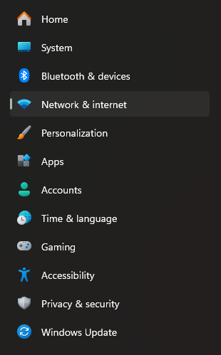
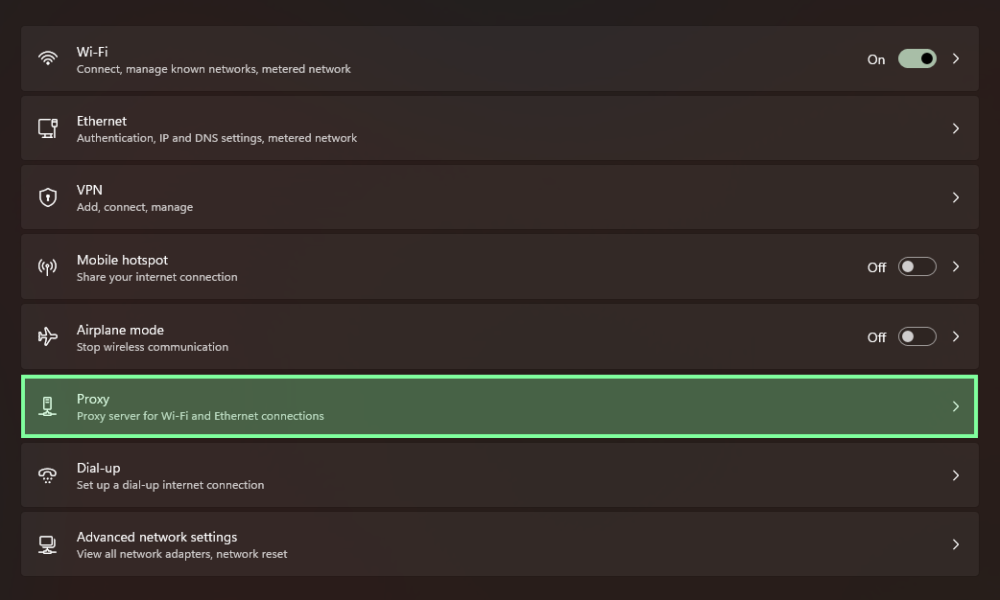
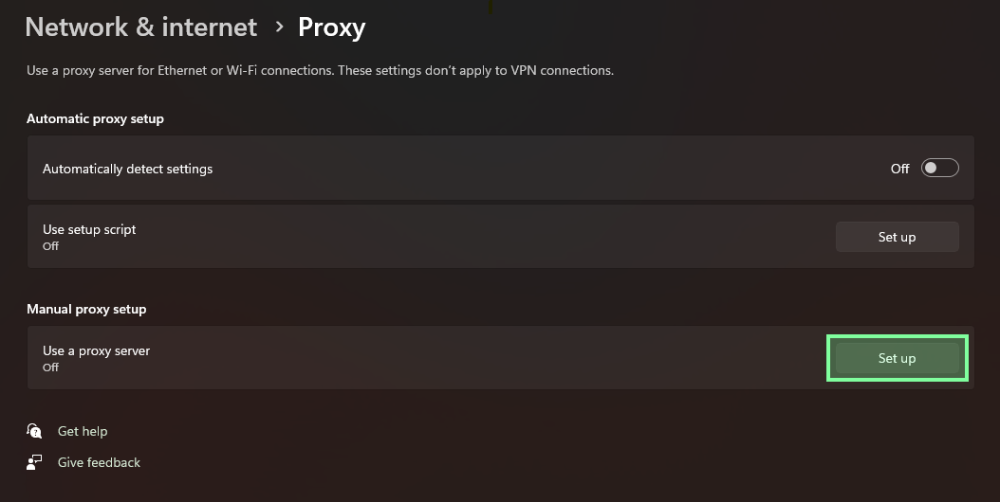
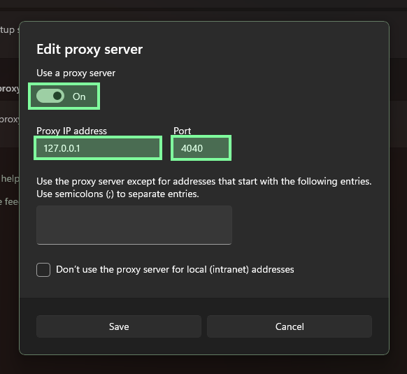

Windows
This is the Windows self-hosted path.
It uses the 404 distribution, which is built on the Rose base and booted with WSL2. This page does not document running the raw Windows STATIC binary as the normal Windows operator path.
The Windows operator bundle includes:
404-distro.tar.gz404-distro-manifest.json404-distro-manifest.json.sigAppData\Roaming\404\static\static.runtime.tomlAppData\Roaming\404\static\profiles\manifest.jsonAppData\Roaming\404\static\profiles\firefox-windows.jsonAppData\Roaming\404\static\profiles\chrome-windows.jsonAppData\Roaming\404\static\profiles\edge-windows.jsonAppData\Local\404\wsl\control-token
Extract 404-windows-x64.zip directly into your Windows home folder, which is usually C:\Users\<your-username>.
That extraction step should place:
404-distro.tar.gz,404-distro-manifest.json, and404-distro-manifest.json.sigin your home folder- the full
AppData\Roaming\404\statictree in the right place - the
AppData\Local\404\wsl\control-tokenfile in the right place
Before you start
- WSL2 must be available on the machine because it is the Windows host mechanism used to boot the 404 distribution
- the public profile catalog is
chrome-windows,edge-windows, andfirefox-windows - the bundled
static.runtime.tomlconfig defaults tofirefox-windows - if you use Chrome, swap
firefox-windowsforchrome-windows - if you use Edge, swap
firefox-windowsforedge-windows - STATIC listens on
127.0.0.1:4040on the Windows side once the distribution is running - the local control plane uses port
4042
For the exact tagged release page, use v2.6.93.
1. Verify the download matches the manifest
Run this in PowerShell:
$manifest = Get-Content "$HOME\Downloads\404-windows-x64\404-distro-manifest.json" | ConvertFrom-Json
$archiveHash = (Get-FileHash "$HOME\Downloads\404-windows-x64\404-distro.tar.gz" -Algorithm SHA256).Hash.ToLower()
"manifest version: $($manifest.version)"
"manifest artifact path: $($manifest.artifact_path)"
"manifest sha256: $($manifest.sha256)"
"archive sha256: $archiveHash"
The two SHA-256 values should match.
2. Extract the bundle into your Windows home folder
Right-click 404-windows-x64.zip, choose Extract All..., and set the destination to your Windows home folder.
In the Extract All dialog:
- click
Browse... - open
This PC → Local Disk (C:) → Users → <your-username> - click
Select Folder - click
Extract
Powershell command
3. Change the default profile
The default profile is Firefox-Windows
If you are using a Blink based profile, you'll have to use the Chrome-Windows or Edge-Windows profile.
- File:
%APPDATA%\404\static\static.runtime.toml
Line to change:
I want to use the Chrome profile
Run this in PowerShell:
I want to use the Edge profile
Run this in PowerShell:
This default configuration is as follows:
- Listener on
4040 - Control plane on
4042 - File-backed key storage
- Profiles loaded from the local
profilesdirectory beside the config file - control token loaded from the relative Windows local-app-data path
4. Import the distribution and write the Windows username file
Run these two commands in PowerShell:
$DistroName = "404"
wsl --import $DistroName "$env:LOCALAPPDATA\404\wsl\$DistroName" "$HOME\404-distro.tar.gz" --version 2
wsl -d $DistroName -- sh -lc "printf '%s\n' '$env:USERNAME' > /opt/404/win-user"
The import directory intentionally lives under %LOCALAPPDATA%\404\wsl\$DistroName. That is the Windows-side storage location for the imported self-hosted distro.
For self-hosted Windows development, you can use a different distro name such as 404-dev to keep it isolated from the app-managed runtime.
5. Start the distribution and confirm start
Launch the distro:
The fixed WSL distro name 404 is only required for the desktop app-managed runtime. The self-hosted path documented here can run under 404, 404-dev, or another name as long as you use that same name consistently in the commands above.
After the distribution boots, 404-init.sh reads static.runtime.toml, mounts bpffs, pre-loads ttl_editor.o with bpftool when available, attaches the pinned classifier to live eth* interfaces, pins fingerprint_profiles, and starts STATIC in proxy mode. If bpftool is unavailable, it falls back to direct tc object loading.
The bundled distro is Alpine-based. Use sh, not bash, for commands you run inside 404 unless you installed bash yourself.
I need to attach ttl_editor.o to a different interface
First, list the interfaces inside the distro:
Then either set EGRESS_IFACES for that session or attach manually.
Session override:
Manual attach:
Open a second PowerShell window to confirm 404 has started. This reads the control token from the Windows-side %LOCALAPPDATA%\404\wsl\control-token path configured by the bundled runtime config:
$TokenPath = "$env:LOCALAPPDATA\404\wsl\control-token"
$token = Get-Content $TokenPath -Raw
Invoke-RestMethod -Headers @{ "X-404-Control-Token" = $token } http://127.0.0.1:4042/status
The distro booted, but I need to start eBPF or STATIC manually
If the distro imports successfully but you end up at a shell prompt instead of a fully running proxy, use the following order.
> From Windows PS terminal (not wsl)
1. Confirm the runtime config exists:
```powershell
wsl -d $DistroName -- sh -lc 'WIN_USER=$(cat /opt/404/win-user); ls -l \
"/mnt/c/Users/${WIN_USER}/AppData/Roaming/com.404.app/static/static.runtime.toml" \
"/mnt/c/Users/${WIN_USER}/AppData/Roaming/404/static/static.runtime.toml" 2>/dev/null'
```
2. If you need to attach the eBPF classifier manually, use the Alpine-safe pinned-program flow:
```powershell
wsl -d $DistroName -- sh -lc 'mkdir -p /sys/fs/bpf/404/ttl_programs; bpftool prog loadall /opt/404/ttl_editor.o /sys/fs/bpf/404/ttl_programs; tc qdisc add dev <interface> clsact 2>/dev/null || true; tc filter add dev <interface> egress bpf da pinned /sys/fs/bpf/404/ttl_programs/tc_counter'
```
3. If you want the normal boot contract after that, run:
```powershell
wsl -d $DistroName -- sh -lc '/opt/404/404-init.sh'
```
4. If eBPF is already attached and you only need to bring up STATIC manually, run the binary directly:
```powershell
wsl -d $DistroName -- sh -lc 'WIN_USER=$(cat /opt/404/win-user); CONFIG=""; for candidate in \
"/mnt/c/Users/${WIN_USER}/AppData/Roaming/com.404.app/static/static.runtime.toml" \
"/mnt/c/Users/${WIN_USER}/AppData/Roaming/404/static/static.runtime.toml"; do \
if [ -f "$candidate" ]; then CONFIG="$candidate"; break; fi; done; \
/opt/404/static --config "$CONFIG" --mode proxy'
```
5. If you copied scripts into the distro from Windows and they fail with `$'\r'` or `invalid option`, normalize line endings before running them:
```powershell
wsl -d $DistroName -- sh -lc "sed -i 's/\r$//' /opt/404/404-init.sh; chmod +x /opt/404/404-init.sh"
```
Useful verification helpers from the open-source repo:
scripts/inspect-ebpf-state.shprints the routed egress path, attachedeth*interfaces, pinned packet profile map, decoded profile entry, and protocol counters.scripts/tcpdump-syn-fingerprint.shcaptures outbound SYN packets and prints TTL, window, MSS, window scale, and option ordering on the live routed interface.
Those helper scripts are repo-side developer tools written for bash. They are not part of the packaged Alpine distro boot path. Run them from a repo checkout in your WSL development environment, or install bash in the distro first if you intentionally want to run them there.
6. Trust the generated CA
On the self-hosted WSL path, STATIC stores its generated CA under the runtime user's Linux app-data directory, not under /opt/404 and not under the desktop app-managed Windows cert path.
For the default self-hosted distro flow, where STATIC runs as root, the live files are typically:
\\wsl.localhost\<distro-name>\root\.local\share\static_proxy\certs\static-ca.crt\\wsl.localhost\<distro-name>\root\.local\share\static_proxy\certs\static-ca.key.dpapi
Example for 404-dev:
$LiveCaDir = "\\wsl.localhost\$DistroName\root\.local\share\static_proxy\certs"
Get-ChildItem $LiveCaDir
For the self-hosted path, the simplest trust path is to use the live cert directly from the distro:
$LiveCaPath = "\\wsl.localhost\$DistroName\root\.local\share\static_proxy\certs\static-ca.crt"
certutil.exe -addstore root $LiveCaPath
I want a Windows-local exported copy of the CA
Fetch the generated CA from the local control plane and export a Windows-local copy for trust installation:
Manual install:
- +
R - Paste the live self-hosted cert path for your distro, for example
\\wsl.localhost\404\root\.local\share\static_proxy\certs\static-ca.crt - Click
Open - Click
Install Certificate.... - Select
Current Userand clickNext. - Choose
Place all certificates in the following storeand clickBrowse.... - Select
Trusted Root Certification Authoritiesand clickOK. - Click
Nextand thenFinish.
If you use Firefox, you must import the certificate into Firefox:
- Settings → Privacy & Security → Certificates → View Certificates
- Authorities → Import
- select the live self-hosted cert at
\\wsl.localhost\<distro-name>\root\.local\share\static_proxy\certs\static-ca.crt, or%LOCALAPPDATA%\404\wsl\static-ca.crtonly if you explicitly exported a Windows-local copy - enable
Trust this CA to identify websites
7. Route browser traffic through the listener
The STATIC listener is located at 127.0.0.1:4040.
For Chrome or Edge:
- Windows Settings → Network & internet → Proxy
- Enable Manual proxy setup
- Address:
127.0.0.1 - Port:
4040
Click Network & internet from the main Windows Settings page:

Then open Proxy from the network settings page:

On the proxy page, select the manual proxy section:

Turn Use a proxy server on and enter 127.0.0.1 with port 4040:

For Firefox:
- Settings → Network Settings → Manual proxy configuration
- HTTP Proxy:
127.0.0.1 - Port:
4040 - Check
Also use this proxy for HTTPS
At that point, browser traffic routed through the configured proxy listener will flow through the 404 distribution and into STATIC.